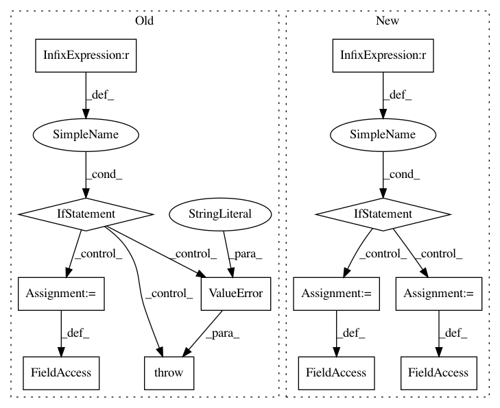

da37438735fd4b845bb0874562bd071865c480bb,texar/modules/encoders/rnn_encoders.py,RNNEncoderBase,__init__,#RNNEncoderBase#Any#Any#Any#,49
Before Change
self._vocab_size = vocab_size
self._embedding = None
if self._hparams.use_embedding:
if embedding is None and self._vocab_size is None:
raise ValueError(
"`vocab_szie` is required if embedding is enabled and "
"`embedding` is not provided")
if isinstance(embedding, tf.Variable):
self._embedding = embedding
else:
self._embedding = embedder_utils.get_embedding(
self._hparams.embedding, embedding, self._vocab_size,
self.variable_scope)
if self._hparams.embedding.trainable:
self._add_trainable_variable(self._embedding)
if self._vocab_size is None:
self._vocab_size = self._embedding.get_shape().as_list()[0]
@staticmethod
def default_hparams():
Returns a dictionary of hyperparameters with default values.
After Change
// Make RNN cells
with tf.variable_scope(self.variable_scope):
if cell_fw is not None:
self._cell_fw = cell_fw
else:
self._cell_fw = layers.get_rnn_cell(self._hparams.rnn_cell_fw)
if cell_bw is not None:
self._cell_bw = cell_bw
elif self.hparams.rnn_cell_share_config:
self._cell_bw = layers.get_rnn_cell(self._hparams.rnn_cell_fw)
In pattern: SUPERPATTERN
Frequency: 4
Non-data size: 12
Instances
Project Name: asyml/texar
Commit Name: da37438735fd4b845bb0874562bd071865c480bb
Time: 2018-03-17
Author: zhitinghu@gmail.com
File Name: texar/modules/encoders/rnn_encoders.py
Class Name: RNNEncoderBase
Method Name: __init__
Project Name: asyml/texar
Commit Name: caca2348bd54ec25d71ee05fd2a58e12db39f2e4
Time: 2018-03-24
Author: zhitinghu@gmail.com
File Name: texar/modules/decoders/rnn_decoder_base.py
Class Name: RNNDecoderBase
Method Name: __init__
Project Name: pymc-devs/pymc3
Commit Name: 535ad4bd165ebd387bdbd8ee801dad8a2e95985c
Time: 2015-06-27
Author: mwibrow@gmail.com
File Name: pymc3/distributions/continuous.py
Class Name: InverseGaussian
Method Name: __init__
Project Name: Qiskit/qiskit-aqua
Commit Name: 089e8b4b48eb1c248b4cf7d83312334b333900d6
Time: 2018-08-31
Author: chenrich@us.ibm.com
File Name: qiskit_aqua/algorithms/adaptive/qsvm/svm_variational.py
Class Name: SVM_Variational
Method Name: init_args